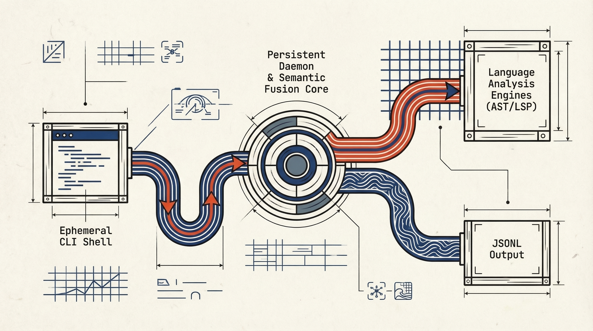

The Loom of
Structured Intelligence.
Weaver is built on a foundation of explicit state and semantic fusion. It treats code not just as text, but as a queryable, structured fabric of logic.
System Topology
The Weaver architecture separates the ephemeral nature of CLI commands from the persistent state of the analysis daemon. This split ensures speed for user interactions while maintaining deep, semantic context in the background.
- CLI Client (Ephemeral)
- Weaver Daemon (Persistent)
- LSP / Tree-sitter Integrations

Semantic Fusion Engine
The heart of Weaver is the Fusion Engine. It ingests raw code, AST data, and LSP diagnostics to build internal semantic data structures that power every observe, act, and verify operation.
Multi-Source Ingestion
Combines static analysis (Tree-sitter) with dynamic runtime data (LSP) to resolve references that static analysis misses.
Provenance Tagging
Every piece of data carries a provenance trail. We know exactly why the AI thinks a function is relevant.
"type": "semantic_node",
"id": "fn::process_data",
"provenance": {
"source": "tree-sitter-rust",
"confidence": 0.98
},
"relationships": [
"calls::validate_input",
"uses::DataStruct"
]
}
Figure 3.1: Internal fusion telemetry, not the public CLI and daemon JSONL envelope.
Client–Daemon Model
Decoupling the user interface from the intelligence engine allows for persistent context and faster CLI response times.
The Daemon
- Hosts LSP child processes (rust-analyzer, pyrefly lsp, etc.).
- Dispatches JSONL requests from the CLI and streams responses.
-
Listens on Unix Domain Socket (or TCP via
--daemon-socket). - Auto-starts when a domain command is issued — no manual launch needed.
$ weaver daemon start
The Client
-
Parses config (
--config-path, XDG, env vars) and CLI flags. - Sends JSONL requests to the daemon, streams the response.
-
Renders human-readable output when stdout is a TTY (
--output auto).
$ weaver observe get-definition --uri file:///src/main.rs --position 10:5
Data Flow & Provenance
Weaver ensures that every insight provided to the AI agent can be traced back to a source of truth.
Ingestion & Parsing
When a file is observed, the Daemon invokes Tree-sitter to generate a Concrete Syntax Tree (CST).
Sempai Pattern Matching
The Sempai Engine runs structural queries against the CST to identify high-level constructs (functions, classes, API endpoints).
LSP Enrichment
If available, the Language Server is queried for type definitions, references, and documentation, enriching the static nodes with semantic context.
Graph Fusion
All data points are merged into the Semantic Graph. Nodes are tagged with confidence scores based on their source (e.g., LSP > Regex).
Explore the Toolkit
Now that you understand the architecture, see how to wield it.